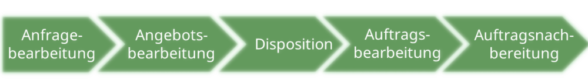

Organisation
Aufgaben und Aufträge in Ihrem Lehrbetrieb
Aufgabe 1
| Aufgabe | Ämtli und Lernjournal |
| Informationen |
|
| Sachmittel |
|
| Beschreibung | Im Basislehrjahr hat jeder Lernende ein Ämtli. Dieses wechselt jede zweite Woche. Wir müssen auch jede Woche ein Lernjournal schreiben, und dieses auf der Lernplattform hochladen. Darin dokumentieren wir, welche Themen wir behandeln und wie es uns dabei geht; ob wir Schwierigkeiten haben, oder ob es uns leicht fällt beispielsweise. |
Aufgabe 2
| Auftrag | Website für die Raiffeisen Schweiz |
| Informationen |
|
| Sachmittel |
|
| Beschreibung | Unser Auftrag ist es, eine Website zu erstellen, in welcher man Stagen (Ausbildungsplatz für Trainees) verwalten und beantragen kann. Für diesen Auftrag benötigen wir viel Kontakt mit dem Auftragsgeber, um es nach seinen Wünschen zu gestalten. |
Aufgabe 3
| Antwort | Mehr Aufträge |
| Beschreibung | Im Betrieb führen wir mehr Aufträge als Aufgaben aus, da jeder Auftrag einzigartig ist, und man muss auch einige Zeit dafür aufwenden. |
Unterscheidung Aufbau- und Ablauforganisation
Aufgabe 1
| Art | Aufbauorganisation | Ablauforganisation |
| Beschreibung | Die Aufbauorganisation bildet die Rahmenbedingungen für das Gesamtgerüst. Aufgaben der Aufbauorganisation sind beispielsweise die Aufgaben zu verteilen, oder Abteilungen zu bilden | Die Ablauforganisation verkettet die einzelnen Aufgaben und die zur Erfüllung nötigen Verrichtungen. Arbeitsvorgänge müssen geordnet ablaufen, um Bearbeitungszeiten und -kosten zu minimieren, Kapazitäten optimal einzusetzen und Arbeitsplätze "human" zu gestalten. |
| Grafik |  |
 |
| Unterschied | Die Aufbauorganisation bildet die statische Organisationsstruktur eines Unternehmens während die Ablauforganisation dynamische Arbeitsprozesse innerhalb der vorgegeben Struktur definiert. | |
Aufgabe 2
| Art | Aufbauorganisation | Ablauforganisation |
| Beispiel | Das Organigramm der Raiffeisen Schweiz bildet eine hierarchische Unternehmensstruktur mit den Kategorien, Fachbereichen, und Abteilungen. | Ein Diagramm, welches den Prozess einer Transaktion beschreibt, zeigt die nötigen Abläufe für einen Arbeitsprozess. |
Aufgabe 3
| Antwort | Je mehr Ebenen eine Aufbauorganisation hat, desto länger dauert ein Entscheid, welcher beispielsweise Abteilungsübergreifend ist, da die jeweiligen Mitarbeiter zu ihrem Vorgesetzten gehen müssen, um das Anliegen zu schildern. Danach muss der Vorgesetzte wiederum zu seinem Vorgesetzten gehen, um das Anliegen weiterzuleiten. Bei vielen Ebenen wird eine Entscheidung stark in die Länge gezogen. |
Unterscheidung Aufbau- und Ablauforganisation
Aufgabe 1
| Ort | GBS St. Gallen |
| Situation | In der GBS nutzt jeder Lehrer unterschiedliche Lehrmittel, um den Schülern den Stoff näherzubringen. Als Beispiele von zwei Lehrern kann ich nennen:
|
Aufgabe 2
| Projektantrag |